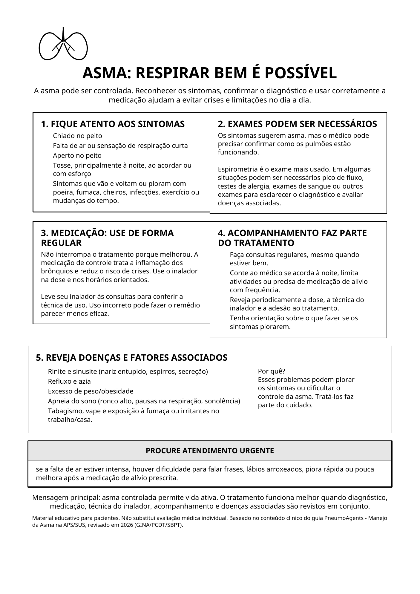

Asma: respirar bem é possível

Ler o texto do infográfico
A asma pode ser controlada. Reconhecer os sintomas, confirmar o diagnóstico e usar corretamente a medicação ajudam a evitar crises e limitações no dia a dia.
1. Fique atento aos sintomas
- Chiado no peito
- Falta de ar ou sensação de respiração curta
- Aperto no peito
- Tosse, principalmente à noite, ao acordar ou com esforço
- Sintomas que vão e voltam ou pioram com poeira, fumaça, cheiros, infecções, exercício ou mudanças do tempo.
2. Exames podem ser necessários
Os sintomas sugerem asma, mas o médico pode precisar confirmar como os pulmões estão funcionando.
Espirometria é o exame mais usado. Em algumas situações podem ser necessários pico de fluxo, testes de alergia, exames de sangue ou outros exames para esclarecer o diagnóstico e avaliar doenças associadas.
3. Medicação: use de forma regular
Não interrompa o tratamento porque melhorou. A medicação de controle trata a inflamação dos brônquios e reduz o risco de crises. Use o inalador na dose e nos horários orientados.
Leve seu inalador às consultas para conferir a técnica de uso. Uso incorreto pode fazer o remédio parecer menos eficaz.
4. Acompanhamento faz parte do tratamento
- Faça consultas regulares, mesmo quando estiver bem.
- Conte ao médico se acorda à noite, limita atividades ou precisa de medicação de alívio com frequência.
- Reveja periodicamente a dose, a técnica do inalador e a adesão ao tratamento.
- Tenha orientação sobre o que fazer se os sintomas piorarem.
5. Reveja doenças e fatores associados
- Rinite e sinusite (nariz entupido, espirros, secreção)
- Refluxo e azia
- Excesso de peso/obesidade
- Apneia do sono (ronco alto, pausas na respiração, sonolência)
- Tabagismo, vape e exposição à fumaça ou irritantes no trabalho/casa.
Por quê? Esses problemas podem piorar os sintomas ou dificultar o controle da asma. Tratá-los faz parte do cuidado.
Procure atendimento urgente
Se a falta de ar estiver intensa, houver dificuldade para falar frases, lábios arroxeados, piora rápida ou pouca melhora após a medicação de alívio prescrita.
Mensagem principal: asma controlada permite vida ativa. O tratamento funciona melhor quando diagnóstico, medicação, técnica do inalador, acompanhamento e doenças associadas são revistos em conjunto.